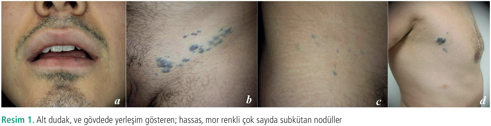
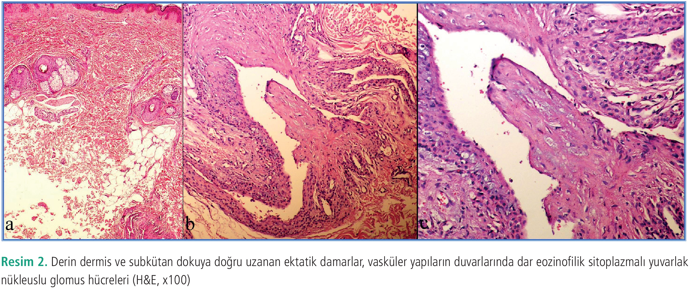

Olgu Sunumu
Familiyal Glomanjiyomatozis: Olgu Sunumu
1 Gazimağusa Devlet Hastanesi, Deri ve Zührevi Hastalıkları Kliniği, Gazimağusa, KKTC
2 Sağlık Bilimleri Üniversitesi, İstanbul Haydarpaşa Numune Eğitim ve Araştırma Hastanesi, Deri ve Zührevi Hastalıklar Kliniği, İstanbul, Türkiye
3 Sağlık Bilimleri Üniversitesi, İstanbul Haydarpaşa Numune Eğitim ve Araştırma Hastanesi, Patoloji Kliniği, İstanbul, Türkiye
Anahtar Kelimeler: Glomusarteriovenöz malformasyonvasküler lezyon
Keywords: Glomusarteriovenous malformationvascular lesion
Geliş: 04.02.2021Kabul: 18.02.2021Yayın: 17.03.2021
s. 56-60
Özet
ÖZET
Glomanjiyomatozis asemptomatik çoklu pembeden maviye nodüller veya plaklar şeklinde ortaya çıkan deride bir arteriovenöz malformasyondur. Lezyonların çoklu olarak görülmesi oldukça nadirdir ve tüm olguların %10’unu temsil eder. Ailevi olgular, glomulin genindeki mutasyonlardan kaynaklanır. Genellikle genç erişkinlerde subungual bölgeleri tercih eden glomus tümörlerinin aksine, glomanjiyomatozisler çoğunlukla çocuklarda veya ergenlikte vücudun çeşitli yerlerinde görülen birden fazla lezyonlarla kendini gösterir. Bu makalede ailesel yaygın kütanöz glomanjiyomatozis tanısını almış 24 yaşında bir erkek olguyu sunuyoruz.
Tam Metin
Giriş
Glomanjiyomatozis, glomus hücrelerinin küçük kümeleriyle çevrili, dilate venlerin varlığı ile karakterize glomus tümörünün morfolojik varyantıdır (1). Glomanjiyomlar çoğunlukla hastalarda çoklu lezyon halinde bulunur. Bazen hastalarda klinik tablo, familiyal glomanjiyomatozis olarak adlandırılan birçok sayıda veya tekrarlayan nodüllerden oluşan bir glomanjiyom tümörünün bir varyantını olarak karşımıza çıkar (2). Biz bu makalede gövdesinin belirli yerlerinde çoklu, yumuşak, mavi ve palpasyonla ağrılı nodülleri olan ve aile öyküsü bulunan 24 yaşındaki “familyal glomanjiyomatozis”li bir erkek hastayı sunuyoruz.
Olgu Sunumu
Yirmi dört yaşında erkek hasta, polikliniğimize vücudunun çeşitli yerlerinde mavi renkte lekeler şikayeti ile başvurdu. Lezyonların 3 yaşındayken kendiliğinden geliştiğini ve daha sonra giderek arttığını tarif etti. Aile öyküsünde baba ve amcada da benzer şikayetlerin olduğunu tarifledi. Hastanın dermatolojik muayenesinde kollar, bacaklar, ayak tabanında, gövde ön ve arka yüzde, 0,5-1,0 cm boyutlarında değişen palpasyonla hassas mor renkli subkütan yerleşimli çok sayıda nodüler lezyon saptandı (Resim 1). Histolojik incelemede, endotel hücreleri dermis ve yağ dokusunda birkaç ve birkaç adet dış glomus hücresi tabakası ile kaplanmış geniş kistik olarak alanlar mevcuttu. İmmünohistokimya, boyamasında tümör hücrelerinin alfa-düz kas aktin için pozitif saptandı (Resim 2). Hasta bu bulgularla familiyal glomanjiyomatozis tanısı aldı.
Hastadan aydınlatılmış onamı formu alınmıştır.
Tartışma
Multipl familiyal glomanjiyomlar, otozomal dominant geçişli nadir vasküler tümörlerdir. Çoğu hastada derinliğe bağlı olarak kırmızı, mor, mavi gibi farklı renklere sahip pigmentli subkütan nodüller ile kendini gösterir (3). Genellikle ergenlik döneminde ortaya çıkarlar ve derinin tüm kısımlarını içerebilirler. Multipl glomus tümörleri, soliterlerden daha az yaygındır ve soliter glomanjiyomların aksine ağrılı değildir (4). Histopatolojik olarak özelliği, birkaç adet glomus hücresiyle çevrili geniş ölçüde dilate vasküler boşluklarla karakterizedir. İmmünohistokimyasal çalışmalarda glomus hücreleri düz kas antijeni (*SMA) ve vimentin 2 ile pozitif boyanır, endotel marker BMA-120 ve anti-Von Willebrand faktörü, diğer hemanjiyomlardan ayırmak için yararlı bir testtir (5). Glomanjiyomdaki malign değişiklik oldukça nadirdir ve sadece birkaç olguda literatürde bildirilmiştir. Multipl glomanjiyomların klinik ayırıcı tanısında venöz malformasyon, özellikle mavi bleb nevüs sendromunu dışlamak adına mutlaka histopatolojik çalışmalar yapılmalıdır (2). Tedavi öncelikle histolojik tanı onaylandıktan sonra ağrı veya kozmetik nedenlerden semptomatik rahatlatmaya yöneliktir. Büyük yüzeyel lezyonlarda, yara izi bırakabileceği için cerrahi girişim çok önerilmemekle birlikte CO2 ve argon lazerler ile tedavi tercih edilebilir. Skleroterapi ve elektron beam terapi, diğer tedavi seçenekleri arasında yer almaktadır (6). Olgumuzun soygeçmişinde 3 jenerasyonda benzer lezyonların olduğu öğrenildi. Lezyonlar çocukluk çağından beri bulunmaktaydı. Ağrılı olan bu lezyonların zaman içinde sayıca artmış olduğu tespit edildi. Bizde olgumuzda lezyonlara yönelik aterosklerol ile skleroterapi uyguladık ve lezyonlarda ilk tedavide orta derede küçülme sağlandı ancak ağrıdan dolayı hasta 2. tedaviyi kabul etmedi.
Sonuç olarak, multipl familiyal glomanjiyomlar nadir görülen, karakteristik renk değişikliği, ağrı ve hassasiyet nedeniyle değişken semptomlarla kendini gösteren deri lezyonlarıdır. Klinik özellikleri ile teşhis edilebilir, ancak şüpheli durumlarda biyopsi gerektirebilirler. Komplet cerrahi eksizyon bu lezyonlarla baş etmenin etkili bir yoludur, ancak bazen bireysel durumlar için başka yöntemler de seçilmektedir. Bu olgu ile nadir görülen ailesel geçişli glomanjiyoma literatürler eşliğinde tartışılmıştır.


Kaynaklar
1.Fitzhugh VA, Beebe KS, Wenokor C, Blacksin M. Glomangiomatosis: a case report. Skeletal Radiol 2017; 46: 1427-1433.
2.Calduch L, Monteagudo C, Martínez E, et al. Familial generalized multiple glomangiomyoma: report of a new family, with immunohistochemical and ultrastructural studies and review of the literature. Pediatr Dermatol 2002; 19: 402-408.
3.Conant MA, Wiesenfeld SL. Multiple glomus tumors of the skin. Arch Dermatol 1971; 103: 481-485.
4.Schopp JG, Sra KK, Wilkerson MG. Glomangioma: a case report and review of the literature. Cutis 2009; 83: 24-27.
5.Aiba M, Hirayama A, Kuramochi S. Glomangiosarcoma in a glomus tumor. An immunohistochemical and ultrastructural study. Cancer 1988; 61: 1467-1471.
6.Barnes L, Estes SA. Laser treatment of hereditary multiple glomus tumors. J Dermatol Surg Oncol 1986; 12: 912-915.